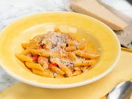
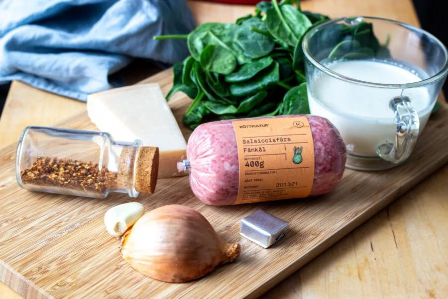

receptet är till för att inspirera till att laga en lyxigare vardagsmåltid som känns speciell men enkel att göra. Sidan vänder sig till personer mellan 23 och 50 år som vill njuta av god mat hemma utan att spendera för mycket tid i köket.


- Skär korven och svampen i mindre bitar
- Fräs salsiccia och svamp i olja i en kastrull tills de fått lite färg
- Skala och skiva vitlök
- Tillsätt vitlök chiliflakes och tomatpure till fräset. steg ytterligare någon minut
- Tillsätt pastan, buljongen och grädden. Häll på vatten så att det täcker. Koka upp och låt koka 5 minuter
- Gå i med tomaterna och koka tills pastan är klar samtidigt som mängden vätska reduceras till en sås. går det för snabbt och pastan inte är helt genomkokt så tillsätt en skvätt vatten
- Gå slutligen in med smör och persilja. Servera direkt och toppa med parmesan.
- 4 klyftor vitlök
- 0,5 tsk chiliflakes
- 2 msk tomatpure
- 300-400 g pasta penne är att föredra
- 5 dl köttbuljong
- 3 dl grädde
- 250 g körsbärstomater
- 1 kruka persilja
- 2 msk smör
till serving
- parmesan